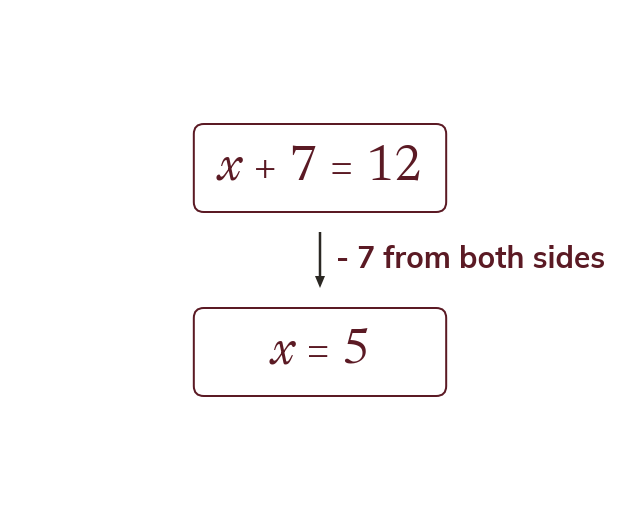

Both sides stay equal
An equation says two expressions are equal. Do the same thing to both sides to keep them equal.
An equation says that two expressions are equal. Whatever is done to one side must be done to the other, so they stay equal.